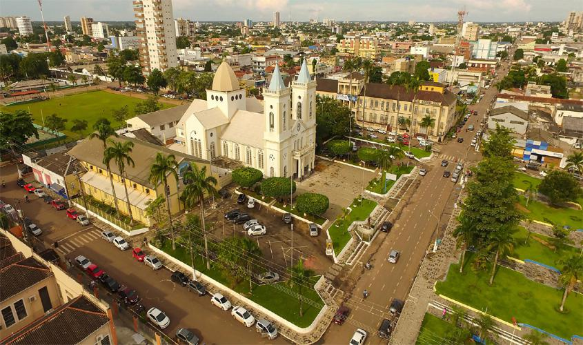

Rondônia localiza-se na parte sudoeste da Região Norte e passou por grande crescimento populacional nas últimas décadas. Sua economia é baseada principalmente na pecuária e na produção agrícola. O estado também possui geração de energia hidrelétrica como atividade importante. A presença de áreas amazônicas faz com que Rondônia tenha relevância ambiental significativa. Porto Velho é sua capital e principal centro urbano. O desenvolvimento econômico trouxe crescimento, mas também desafios relacionados à preservação ambiental.
